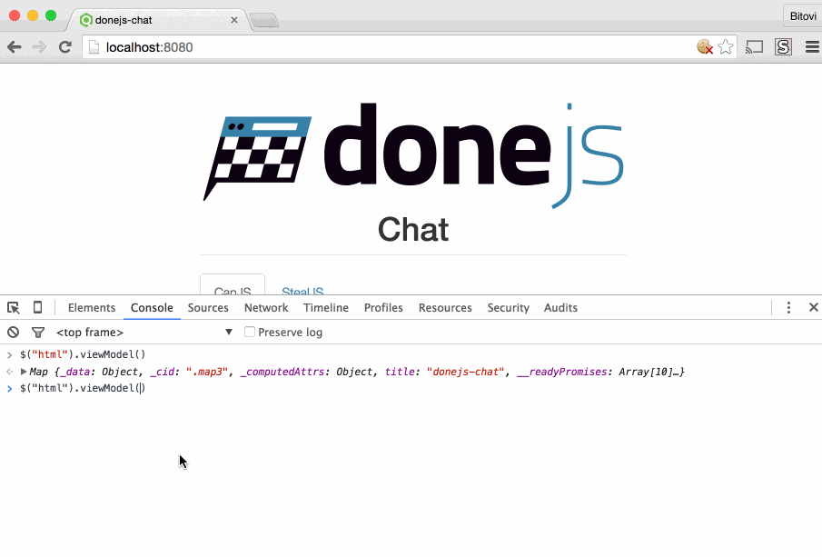

In the newly released version of done-autorender you now have access to your application's View Model globally.
The View Model I am referring to is the one that applies to your index.stache template. In the DoneJS chat example app we import the View Model like so:
<can-import from="donejs-chat/app" export-as="viewModel" />
In development mode especially (but also in production) it is nice to be able to make changes to your View Model in your browser's devtools and see how it affects the page.
You can now do that with done-autorender 0.6.1 To see your application's View Model type:
$("html").viewModel();
Into your console. This returns the can.Map instance which you can manipulate like any other can.Map.
See below as I change the page and title in the donejs-chat application.
